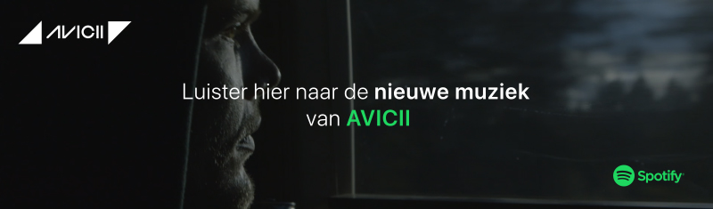

  <video
    id="video"
    poster="fallback.jpg"
    loop
    controls
    muted
    autoplay
    width="800"
    height="235">
    <source src="video.webm" type="video/webm">
    <audio loop id="audio" >
      <source src="audio.ogg" type="audio/mpeg"/>
    </audio>
    
  </video>

  <script>

  var video = document.getElementById('video');
  var audio = document.getElementById('audio');
  var audioStarted = false;

    var URL = 'https://open.spotify.com/user/spotify/playlist/37i9dQZF1DXcXBWjiVEM8R?si=GIFF9Nuj'
    var screenHeight = screen.height || 570;
    var screenWidth = screen.width || 520;
    var handleClick = function(){
      window.open(URL, '_blank','location=yes,height='+screen.height+',width='+screen.width+',scrollbars=yes,status=yes');
    }
    video.volume = 0;
    audio.volume = 0;
    video.onclick = handleClick;

    video.onplay  = function() {
      audio.currentTime= video.currentTime;
      audio.play()

    }

    video.onpause = function() {
      audio.pause()
    }

    video.onvolumechange = function() {
      console.log('video volume change', video.volume);
      audio.volume = video.volume;
    }

    audio.onloadstart = function(){
      audio.volume = 0;
    }
  </script>
  <style>
    html, body{
      margin: 0px;
    }
    *{
      margin: 0px;
    }
  </style>
